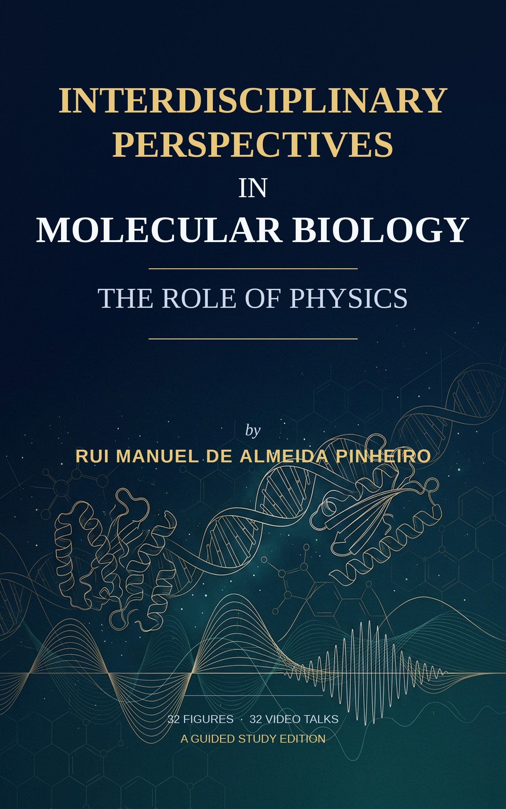

Publications · Rui Manuel de Almeida Pinheiro · Wave Only Ontology
Published on:

A Guided Study Edition
This thesis explores the profound interdisciplinary relationship between physics and molecular biology, demonstrating how physical principles are indispensable for understanding fundamental biological processes. I argue that physics provides the essential framework for elucidating mechanisms at the molecular level, driving advancements in fields ranging from protein structure to cellular signaling.
The work is structured into four core sections. The first section delves into the physics of protein folding, examining energy minimization principles, the role of molecular forces in secondary structure formation (alpha-helices and beta-sheets), and the utility of experimental and computational methods like X-ray crystallography, NMR spectroscopy, and molecular dynamics simulations in mapping folding pathways and understanding misfolding diseases.
The second section applies non-equilibrium thermodynamics to enzymatic catalysis. I discuss how enzymes lower activation energy barriers, the interplay of entropy and enthalpy, and the significance of energy landscapes in catalytic efficiency, supported by case studies on enzymes like DNA polymerase and ATP synthase.
The third section investigates molecular geometry and information transfer. I analyze the physical principles governing DNA/RNA architecture, including electrostatic forces and base-pair stacking, and explore the dynamics of genetic information encoding and decoding during transcription and translation, emphasizing RNA polymerase-DNA interactions.
Finally, the fourth section addresses signaling and molecular recognition, focusing on ligand-receptor binding dynamics, allosteric regulation through energy landscape modulation, and the application of physics-based computational models in drug design.
Throughout, I highlight emerging trends and challenges in this integrated field, envisioning future directions for transformative research.
16 scientific figures · 16 video talks · complete text
TeraBox · Kindle Edition
This thesis investigates the critical relationship between structural integrity and the interplay of signal and noise thresholds within complex systems. Structural integrity is paramount, underpinning the functionality and resilience of systems across theoretical physics and practical applications.
This work posits that the delicate balance between a defined signal threshold (1/137), rooted in fundamental physics like Quantum Electrodynamics (QED), and a noise threshold (1/128), which dictates system coherence and potential dissolution, fundamentally governs system stability.
The signal threshold, quantified by the fine-structure constant, plays a vital role in maintaining coherence and order. Deviations from this threshold can introduce systemic vulnerabilities. Conversely, the noise threshold represents the level at which disruptive elements can propagate, leading to instability and eventual system dissolution.
The research delves into the dynamic mechanisms, such as feedback loops and self-organization, that complex systems utilize to manage this balance, mitigating noise while reinforcing signals. Through case studies from quantum computing, telecommunications, and biological systems, this thesis illustrates the profound implications of this signal-noise dynamic.
Finally, it addresses current theoretical limitations and outlines promising avenues for future research, emphasizing the ongoing need to refine our understanding of these thresholds for enhanced technological advancement and system resilience.
The report, Context Fabric and AI Memory Integration: Industry Insights, provides a comprehensive examination of the foundational concepts, technological advancements, and industry applications surrounding the integration of Context Fabric and AI memory systems. It underscores the transformative potential of these technologies in enabling seamless, scalable, and intelligent interactions across dynamic data ecosystems.
The analysis begins by introducing the Context Fabric as a pivotal structural layer, facilitating continuity and coherence in AI operations. By acting as an active framework, the Context Fabric enables dynamic data and AI interactions, ensuring consistency across diverse systems.
This foundation is further explored through the lens of technological evolution, highlighting the shift from static data archives to dynamic context weaving. This transition marks a significant move from passive data storage to real-time, active context management, with profound implications for scalability, adaptability, and user-centric AI experiences.
The report delves into the concept of persistent personal intelligence, emphasizing the role of long-term state management in maintaining contextual awareness over time. By leveraging advanced strategies for memory retention, AI systems are positioned to deliver personalized, context-aware interactions that adapt to individual user needs and behaviors.
This capability is further enhanced in cross-ecosystem environments, where the report explores methods of context weaving to enable intelligent workspaces and seamless collaboration across platforms. Interoperability and multi-system integration are identified as critical drivers for enhancing productivity and fostering innovation in these interconnected ecosystems.
A key focus of the report is on optimizing long-term AI memory through techniques such as key-value (KV) cache compression and semantic reuse. These approaches address the growing demand for memory efficiency and scalability, offering practical solutions to improve resource utilization while maintaining performance in large-scale applications.
The discussion extends to the broader industry implications, where the integration of Context Fabric and AI memory systems is poised to revolutionize sectors by enhancing scalability, improving operational efficiency, and enabling pattern reuse. The report highlights emerging trends in scalability and efficiency, with a forward-looking perspective on how these advancements will shape industry practices through 2025 and beyond.
Supported by detailed analyses and visual representations, including comparisons of static versus dynamic memory systems and insights into efficiency gains from memory optimization techniques, the report provides actionable insights for stakeholders across technology and business domains. By synthesizing foundational principles with practical applications, the report concludes that Context Fabric and AI memory integration represent a paradigm shift, redefining how intelligent systems interact, evolve, and deliver value across industries.